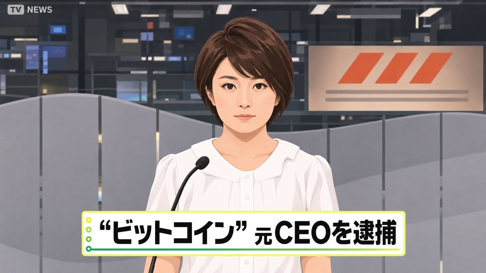

第1層名前だけは知ってる
ふつうのサービスには必ず運営会社がある。アプリを作った会社、困ったときの窓口、責任者。だからビットコインにも「やってる会社」と「社長」がいるはずと思ってしまう。

実際に2015年に放送されたテロップ。このとき逮捕されたのは取引所マウントゴックスの社長マルク・カルプレスで、ビットコインの「社長」ではない。
見出しクイズ
2015年の逮捕を伝える見出し。正確なものはどれ？ タップして選んでみよう。
「ビットコイン株式会社」の会社概要をいくら調べても出てこない。
| 社名 | |
|---|---|
| 代表者（CEO） | |
| 本社 | |
| お問い合わせ窓口 | |
| ルールを変えられる人 |
どこをどう探しても、出てこない。運営する会社そのものがないから。
動かしているのは世界中の参加者みんな。真ん中に立つ「誰か」はいない。
※ 取引所やウォレットのアプリには会社がある。でもそれは「ビットコインを使う道具」の会社で、ビットコイン自体の運営ではない。
関わる人それぞれにできることはある。でも、ビットコイン自体を支配する力は、誰にもない。
世界中の何万ものノードが、それぞれ自分でルールをチェックしている。だから、誰か一人の思いどおりにはならない。
内側の仕組みを知りたくなったら → さわってわかるビットコイン